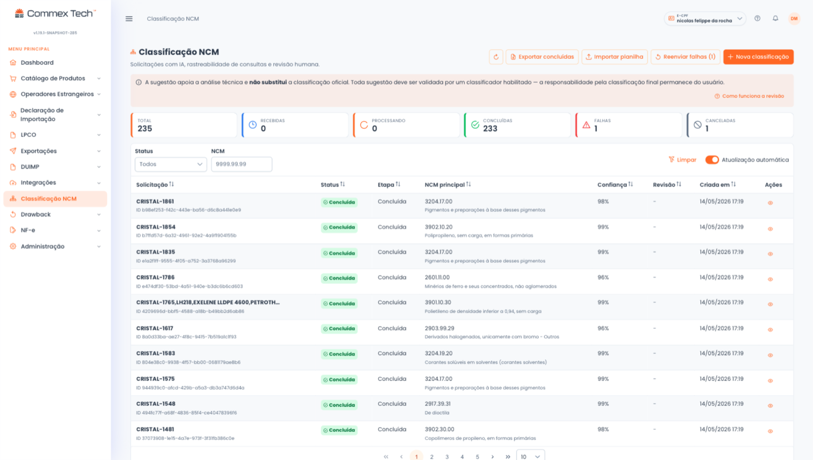

Governança e automação para o comércio exterior em escala.
A Commex Tech classifica NCM com um agente especializado em classificação fiscal, cadastra produtos no Portal Único e guarda o registro de cada decisão, do autor à base legal.
Operação de comex em escala não se governa em planilha.
Quando o catálogo cresce, cada etapa vira um ponto de erro e de retrabalho. Boa parte desse custo não aparece em relatório nenhum.
O catálogo cresce mais rápido que o time
Cada produto novo exige classificação e atributos antes de entrar no Portal Único. A fila anda no ritmo de quem sabe fazer.
Cada exigência trava o despacho
NCM errada, atributo faltando no cadastro ou licença fora do prazo: qualquer pendência retém a carga no canal e gera multa.
Conhecimento em planilha e na memória
O critério e o histórico moram numa pessoa e em arquivos paralelos que divergem. Quem sai leva junto o que sabia.
Sem rastro, a fiscalização vira risco
Sem registro de quem decidiu cada NCM e com qual base legal, auditoria interna e Receita passam a ser exposição, não rotina.
Do catálogo no seu ERP até o Portal Único.
A base da plataforma é o Cadastro de Produtos: cadastro em massa, com IA e trilha de auditoria. Classificação Fiscal NCM, Integrações ERP, DUIMP, LPCO, DU-E e NFe entram como módulos adicionais, contratados à parte conforme a operação precisa.
Cadastro de Produtos
O catálogo que sustenta toda a operação: cadastro de produtos em massa, atributos do Portal Único validados antes do envio e trilha de auditoria por SKU. Os outros seis módulos se somam a essa base.
Conhecer a base →Classificação Fiscal NCM
Um agente especializado sugere a NCM com score de confiança e base legal. De 3–4 horas para 5 minutos por produto.
Conhecer o módulo →DUIMP
Na DUIMP, um atributo obrigatório em aberto trava o registro. O módulo mede quanto do seu catálogo já atende às exigências e organiza o preenchimento do que falta.
Conhecer o módulo →LPCO
Licenças e anuências acompanhadas dentro do fluxo, com o prazo de cada órgão anuente visível para o time inteiro.
Conhecer o módulo →DU-E
Dados do ERP direto para a DU-E, com o histórico de cada envio registrado.
Conhecer o módulo →NFe
Integração fiscal alinhada à operação de comex. Os dados da nota ficam consistentes com o que foi declarado, sem divergência entre sistemas.
Conhecer o módulo →Integrações ERP
SAP, TOTVS, Oracle, OSGT e sistemas próprios conectados por API REST ou SFTP, com OAuth e ambiente multi-tenant isolado.
Conhecer o módulo →Do catálogo à declaração, num fluxo só
A plataforma trabalha sobre o catálogo que você já tem, direto no navegador ou puxado do ERP. Ninguém troca de sistema nem redigita produto.
Centralize o catálogo
Cadastro de produtos em massa na plataforma, direto ou integrado ao ERP (SAP, TOTVS, Oracle, OSGT). O catálogo passa a ter uma versão única e auditável.
Classifique e complete
O agente especializado sugere a NCM com score de confiança e base legal, e a plataforma monta e valida os atributos que o Portal Único exige.
Declare com rastro
Seu time revisa só o que o score aponta e envia ao Portal Único. Cada decisão fica registrada com autor, data e base legal.
As telas que o seu time usa todo dia.
São imagens de telas em produção, não mockups: o cadastro de produtos e a fila de classificação, como o seu time vê no dia a dia.

Cadastro de Produtos: os atributos exigidos pela NCM, preenchidos e validados.

Classificação Fiscal NCM: sugestão do agente e confiança item a item.
Os números da plataforma
Todos os quatro saíram de operação em produção.
Por que uma plataforma, e não mais uma ferramenta.
Ferramenta isolada resolve uma etapa e cria mais uma planilha para conciliar. A Commex Tech cobre o caminho do catálogo à declaração e registra cada decisão para responder à fiscalização.
- Um fluxo só, do catálogo ao Portal Único, em vez de uma ferramenta por etapa
- Agente especializado de NCM, treinado em milhões de classificações (não um lookup de tabela)
- Integração nativa com o ERP que já roda na sua empresa
- Rastreabilidade auditável por SKU: autor, data e base legal de cada decisão
- Suporte próximo, em dias úteis, com treinamento inicial incluso
Exemplo de registro de um SKU
Produto: Bomba hidráulica de engrenagens
NCM aplicada: 8413.60.11 · score de confiança alto
Quem classificou: o agente, com validação do analista responsável
Quando: data e hora registradas no audit log
Base legal: TIPI vigente e entendimento da Receita na data da decisão
O que a XCMG Brasil diz da parceria.
Com a solução implementada pela Commex Tech, passamos a contar com um fluxo mais organizado, padronizado e eficiente (…) A centralização das informações em uma única plataforma trouxe ganhos significativos em controle, rastreabilidade e confiabilidade dos dados, reduzindo retrabalhos e facilitando o gerenciamento das atividades do dia a dia.
Comece por um diagnóstico da sua operação
Fale com um especialista e mostre como o comex roda hoje. Se quiser, envie uma amostra do catálogo: em uma conversa dá para ver onde a operação está exposta, da classificação à declaração.
Falar com um especialista →